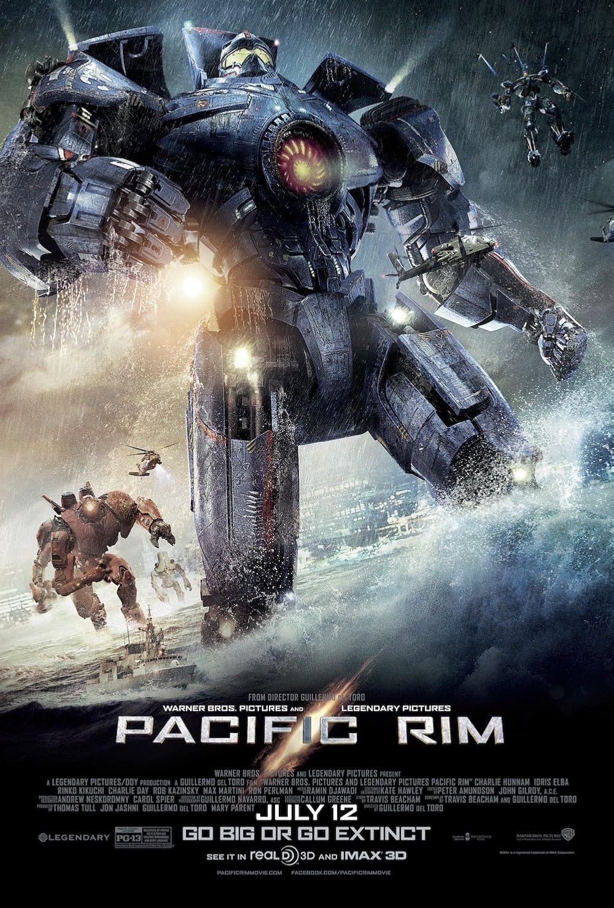

La trama se ambienta en un futuro cercano donde la Tierra se encuentra bajo el ataque constante de los Kaijus, colosales criaturas alienígenas que emergen desde un portal interdimensional en el fondo del Océano Pacífico, conocido como "La Brecha". Para combatir esta amenaza que destruye ciudades enteras, la humanidad une sus recursos científicos y militares para crear los Jaegers: masivos robots humanoides pilotados simultáneamente por dos personas cuyas mentes están unidas a través de un puente neuronal conocido como "La Deriva". El conflicto central sigue a Raleigh Becket, un piloto retirado, y a Mako Mori, una novata traumatizada por su pasado, quienes deben comandar al legendario pero obsoleto Jaeger estadounidense, Gipsy Danger, en un último esfuerzo desesperado por cerrar el portal para siempre.
REGRESAR